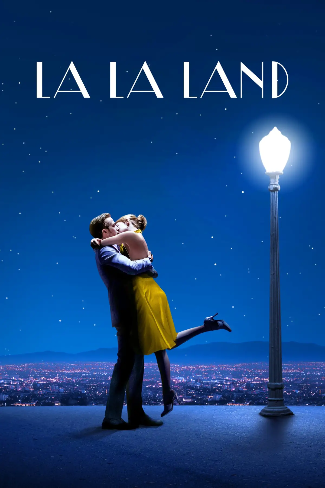

A modern-day classic, Damien Chazelle's La La Land is a vibrant, emotionally resonant musical that
celebrates the dreams, sacrifices, and heartbreaks that define the pursuit of passion.
With its
unforgettable score and dazzling cinematography, the film transports audiences into the world of two
aspiring artists trying to make their mark in a city where dreams are made and broken.
In the heart of Los Angeles, aspiring actress Mia Dolan (Emma Stone) and jazz musician Sebastian
Wilder
(Ryan Gosling) meet and fall in love, all while chasing their individual dreams in a city that often
tests their resolve. Written and directed by Damien Chazelle, the film is a love letter to both the
golden age of Hollywood musicals and the challenges of contemporary life.
Featuring an unforgettable original soundtrack, La La Land also stars John Legend as Keith, a
successful
jazz musician, and J.K. Simmons as Bill, the pragmatic jazz club owner who fires Sebastian. The
film’s
stunning visuals and choreography further underscore its themes of love, ambition, and the price of
artistic success.
Winner of multiple Academy Awards, including Best Director for Chazelle and Best Actress for
Stone,
La La Land is an exploration of dreams, love, and the delicate balance between the two in a world
where
the pursuit of greatness often demands great personal sacrifice.
